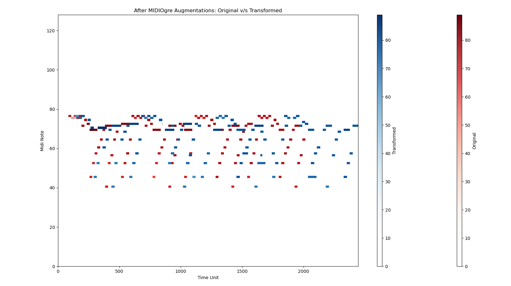

Welcome to MIDIOgre’s documentation!
MIDIOgre


MIDIOgre is a Python library designed for performing data augmentations on MIDI inputs, primarily for machine learning models operating on MIDI data. With MIDIOgre, you can easily generate variations of MIDI sequences to enrich your training data and improve the robustness and generalization of your models.

Augmentation Functions
Implemented
PitchShift: Randomly transpose (pitch shift) MIDI note values of randomly selected instruments in a MIDI file.
OnsetTimeShift: Randomly modify MIDI note onset times while keeping their total durations intact.
DurationShift: Randomly modify MIDI note durations while keeping their onset times intact.
NoteDelete: Randomly delete some notes from a MIDI instrument track.
NoteAdd: Randomly add some notes to a MIDI instrument track.
TempoShift: Randomly vary the tempo of the whole MIDI file (currently, this does not support tempo changes within the file).
Envisaged
NoteSplit: Randomly split some notes in a MIDI instrument track to a random number of chunks.
VelocityShift: Randomly alter MIDI note velocities of randomly selected instruments in a MIDI file.
Swing-based augmentations
MIDI CC based augmentations
Semantically-meaningful augmentations (respects rhythms & beats)
Suggestions welcome for more!
(Some of these have been inspired from mdtk)
Note
This work is highly primitive at the moment and is undergoing active development. As of now, it is simply a showcase of work and is not ready to be integrated into your ML workflow. However, I intend to get it usable on priority.
Contributing
Contributions to MIDIOgre are welcome! If you’d like to contribute, please reach out to me via email (< my_github_id_without_hyphens>@cmu.edu).
Some areas I could use help (will update this progressively):
Writing extensive unit tests (not simply for the sake of maximizing code coverage).
Documentation (improving existing docs & adding more info to cater to developers from all kinds of music theory & programming backgrounds).
License
This project is licensed under the MIT License - see the LICENSE file for details.
API Documentation
Examples
Examples: